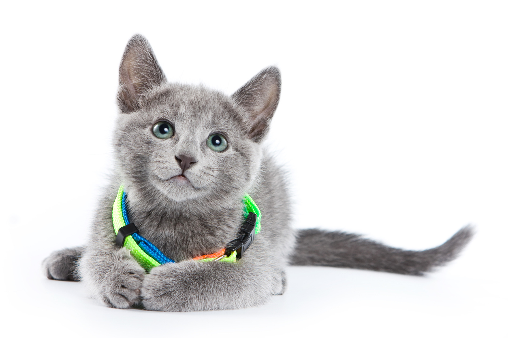

Pet Channel
| |
| แมวพันธุ์รัสเซียนบลู (Russian Blue) |
|  |
ลักษณะทั่วไป รัสเซียนบลูเป็นแมวที่มีกล้ามเนื้อแข็งแรง และมีลักษณะโดยรวมที่ดูดี ซึ่งมีความเหมือนกับแมวสีสวาดและแมวพันธุ์โอเร็นทัลขนสั้นตรงที่มันมีลำตัวที่ยาว ผอมเพรียว และดูสง่างาม รัสเซียนบลูมีลำตัวขนาดกลางและเต็มไปด้วยกล้ามเนื้อ อีกทั้งยังมีลำคอที่ยาวและดูสง่างาม แต่คอของแมวพันธุ์นี้มักถูกซ่อนโดยขนที่หนาและหัวไหล่ที่ตั้งชันขณะนั่ง ทำให้ดูเหมือนมีคอสั้นและหนา อย่างไรก็ดี รัสเซียนบลูเป็นแมวที่ดูตัวใหญ่กว่าความเป็นจริง เพราะมันมีขนสองชั้น ซึ่งนับว่าเป็นลักษณะเด่นของแมวพันธุ์นี้ก็ว่าได้ ขนของรัสเซียนบลูนั้นมีความหนา นุ่มเหมือนผ้าไหม เนื้อสัมผัสเหมือนกำมะหยี่ และมีขนที่ทำมุม 45 องศา โดยมีสีขนเป็นสีน้ำเงินสว่าง ซึ่งมีสีเข้มตั้งแต่โคนจรดปลายของขนชั้นนอกและมีปลายขนเป็นสีเงิน นอกจากนี้ขนของแมวยังแวววาวเมื่อสะท้อนแสง ดวงตาของลูกแมวพันธุ์นี้เป็นสีเหลือง หลังจากผ่านไป 4 เดือน วงแหวนสีเขียวสว่างจะปรากฏรอบๆ รูม่านตา เมื่อแมวโตขึ้น สีของดวงตาจะค่อยๆ เปลี่ยนเป็นสีเขียวสว่างและชัดเจน |